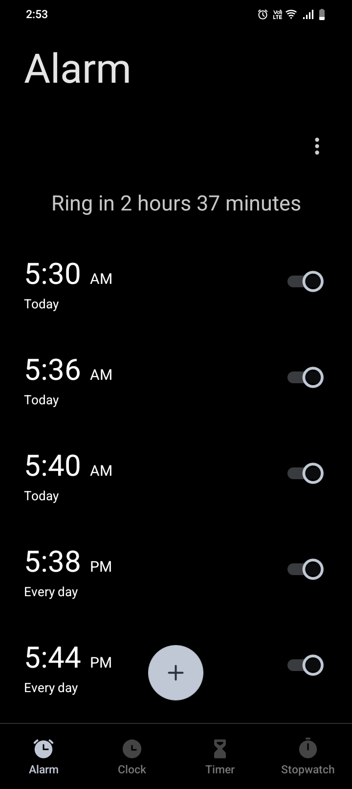
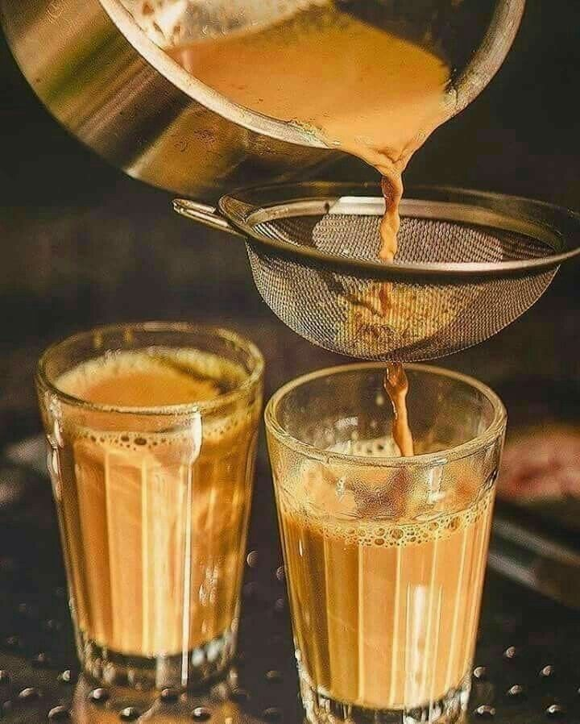
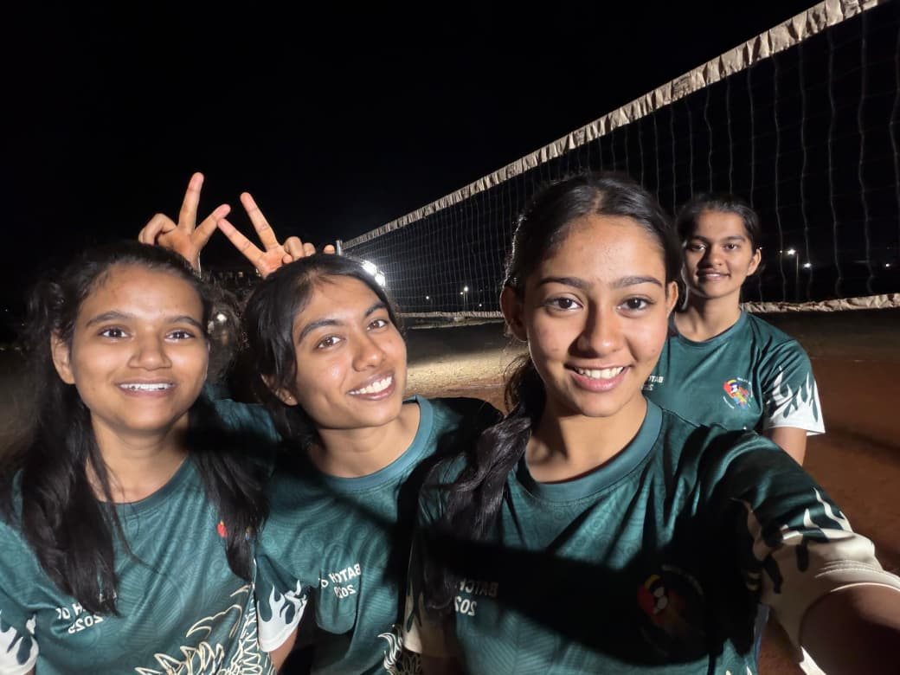

Main factor was volleyball jiske vjse humne ekdusre ke sath time spend kiya .... (bohot)
Muze abhi bhi yad he tu roorkee gyi thi and hum log text pe baat krte the ki ye krenge vo krenge ....
😆
Morning practice and nashe talkse especially 😉
Fir shuru hui morning practice 🙂
I mean u can see mera struggle and efforts jo roj time pe ata tha early morning
just for u 😒

I remember.....
Hum pahad chadne jane vale the
Just to feel sunrise 🌄
chale kya?

And after morning practice kadkti dhup me tapri pe voh first chai was my one of the best memory ❤️

And then finally captain Mauli prepared for eklavya
🫡
(Looking cute btw)
